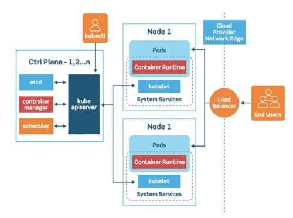
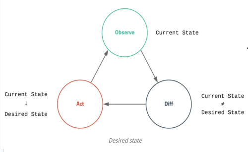

Docker 와 같은 가상 컨테이너 기술 + 컨테이너들을 배포하는 환경
같이보기
- 수 많은 가상 컨테이너 들을 관리하고 자동화
(오케스트레이션)할 필요가 있어짐 - 컨테이너 생성 + 자동화 + 배포 모든 것을 합친거라고 보면 됨
사용하는 이유
- Docker 같은 경우에는 컨테이너를 생성 하는 것 까지는 어느정도 자동화 가능하긴 한데 딱 거기 까지밖에 불가 하다
- k8s에 경우 컨테이너 내부에 시스템을 업데이트 하거나 롤백 하는 것을 편하게 할 수 있다
- 또한 한쪽에 컨테이너의 트래픽이 몰렸을 경우 이를 적절히 분산처리 하는것도 가능하다
구조
클러스터 (Cluster)
클러스터란 실행중인 컨테이너의 집합을 의미 한다
- 재대로 정의하면 컨테이너화된 프로그램을 실행하는
노드의 집합이다 - k8s를 실행중이라는 의미는 클러스터를 실행 중 이다 이렇게도 표현 가능

- 컨트롤 플레인 영역 (Master Node): 클러스터의 제어영역
- 노드 (Worker Node): 컨테이너 내부 프로그램을 실행하는 역할
컨트롤 플레인 (Master Node)
클러스터의 상태를 관리하고 제어
- 전체적인 구조는 이런 느낌이다
- 클라이언트 요청을 처리하는 API 서버 ←> 그 API 가 클러스터의 상태를 저장하는 DB
scheduler
서비스 담당
- API 서버와 통신하는 컴포넌트
- 각각의 노드의 시스템 자원을 관리한다
- 새로 생성된 pod 를 감지하고 적절한 노드에게 배포하는 기능
- 여기서
pod란 컨테이너 애플리케이션의 최소 단위
- 여기서
controller-manager
클라이언트 담당
- 컨트롤 프로세스 통합 관리
- 예가 클러스터 관리자 페이지 느낌이라고 생각하면 됨
Cloud 컨트롤러 매니저: AWS, GCP 등 클라우드 서비스와 통신하는kube 컨트롤러 매니저: api server 와 통신하여 현재scheduler정보와etcd에 저장된 정보를 대조하여 클러스터 상태 갱신
kube api server
API 서버 담당
etcd,scheduler데이터 불러와서controller-manager에 적절한 응답을 반환
etcd
DB 담당
- 클러스터 상태 저장
노드 (Worker Node)
- 컨테이너를 포함한 각종 관리 시스템을 추가
kubelet
- api server에 노드에 리소스 상태를 보고
CRI(Container Runtime Interface)
kubelet이 다양한 컨테이너 런타임과 통신할 수 있도록 설계한 인터페이스- 컨테이너 구현체가
Docker뿐이 아니라 다양하게 존재 하기 때문에 모든 컨테이너 구현제가kubelet와 통신 할 수 있도록 인터페이스를 만든 것
kube-proxy
- 네트워크 프록시 & 로드벨런싱 담당
Pod
- k8s에서 배포할 수 있는 가장 작은단위
- 한개 이상의 컨테이너, 스토리지, 네트워크를 가진다
- Docker 가 컨테이너 단위 라면, k8s 는 이
Pod단위 이다
워크로드
k8s를 통해 배포할때 가장 작은 단위인 pod 와 이를 실행하는구성요소들의 추상화
ReplicaSet
- 실행되는 Pod를 지정된 수만큼 복제하여 실행시킨다
- 일반적으로
Deployment를 정의하면 자동으로 관리 - 노드가 어떤 문제가 발생하면 여기에 저장된 복제본을 pop 하고 새로운 복제본을 생성하는 작업을 한다
Deployment
- 실행되는 Pod 를 모니터링하는 프로세싱
- Deployment 를 정의하여 새로운
ReplicaSets을 만들거나 기존 Deployment를 제거
서비스
- Pod 집합에서 실행중인 에플리케이션을 외부로 노출 시키는 방법
- 쉽게 말해서 외부IP 주소를 할당한다
주요 개념
컨테이너 런타임
- 쿠버네티스 자체의 컨테이너 런타임 가지고 있지 않는다
- Docker Engine 이나 기타 런타임을 설치 해야한다
Desired State
관리자가 서버를 배포할 때 원하는 상태를 선언 하는 방식

Desired State: 원하는 상태- 구체적으로 웹서버 몇게 띄울지, 포트 몇번 쓸지 결정
Kubernetes Object Spec
- 모든 k8s 의 Object를 정의하는 YML 파일
- 대충 이런느낌
apiVersion: apps/v1
kind: Deployment
metadata:
name: nginx
namespace: dev
spec:
replicas: 3
selector:
matchLabels:
app: nginx
template:
metadata:
labels:
app: nginx
spec:
containers:
- name: nginx
image: nginx:latest
command: ["/bin/bash", "-c", "--"]
args: ["while true; do sleep 30; done;"]
ports:
- containerPort: 80설치 에디션 (배포 도구)
kubeadm
아마 기본 설치 방법인듯
- 쿠버네티스 공식 클러스터 관리 도구
Kubespray
- 상용서비스에 적합한 오픈소스 프로잭트
kops
- 향후 kubeadm 을 대체 하기위한 프로젝트 인듯?